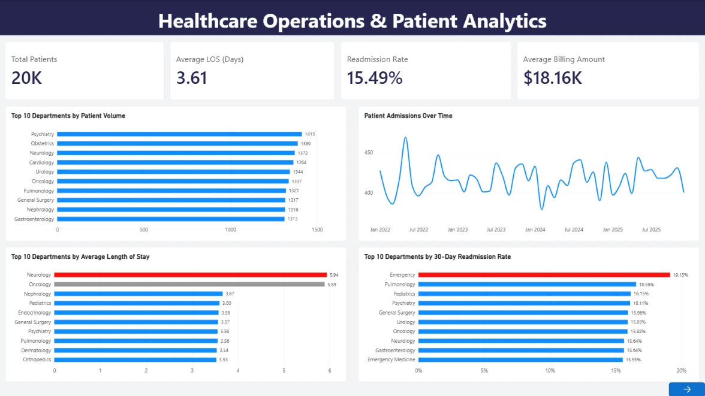

ACTUAL POWER BI DASHBOARDHealthcare Operations & Patient Analytics
Cleaned and analyzed 20,000 synthetic patient records to examine departmental volume, length of stay, and operational performance. Built SQL analyses and a three-page Power BI dashboard showing a 15.49% readmission rate and $18.16K average billing amount in this synthetic dataset.
View Project Details
Business question
How do patient volumes, length of stay and readmissions vary across hospital departments?
My approach
Validated and standardized a synthetic 20,000-row dataset, queried department-level metrics in SQL, and assembled a three-page Power BI dashboard.
Selected findings
The overall average stay was approximately 3.61 days; Neurology and Oncology showed longer averages, around 5.94 and 5.89 days, respectively. These are exploratory patterns in synthetic data, not real-world clinical conclusions.
Dashboard gallery
Explore all three pages of the Power BI report. Figures reflect synthetic data used for a portfolio analysis.
Deliverables
Cleaning workflow, SQL analysis, three-page Power BI dashboard and project documentation in GitHub.